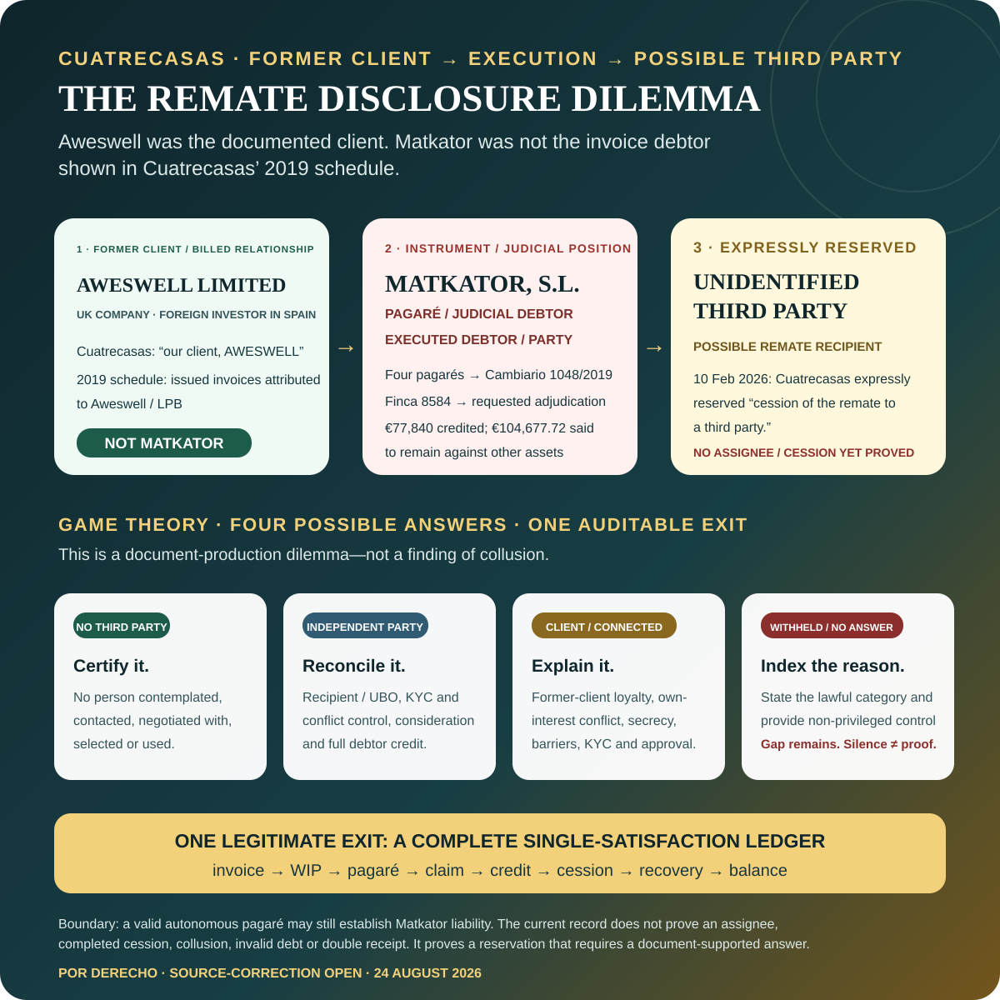

UNITARY RECONSTRUCTION → PRECURSOR RISK → PROTECTION → IMPLEMENTATION → EXECUTION
Cuatrecasas and Sun Park: position after the unitary reverse-engineering review.
The matter has now been reconstructed from the present MYND/HNT outcome backwards and from the earlier ownership, Community, lender and insolvency structure forwards. The result confirms the integrated-mandate and execution-inversion analysis, expands the protection timeline to January 2018, strengthens the October 2019 handover question and narrows one prior allegation: Cuatrecasas did give reasoned early advice on the economic condition for insolvency exit.
Controlling boundary: the Acosta Matos / CAM / HNT / MYND-connected perimeter—including its alleged predecessors, the Monte Lanza/Molina dissidents and their representatives—remains the alleged principal private actor and beneficiary of the underlying chain. This analysis neither exonerates nor displaces that perimeter, the Insolvency Administration or the disputed judicial conduct. Cuatrecasas is not presently proved to have joined it or a common plan. The client side’s position is that the firm’s acts, omissions, silence and inaction may have enabled or aggravated outcomes pursued or benefited from by the principal actors; any responsibility would be separate and cumulative, while its later La Laguna steps require their own direct analysis. No final criminal, civil or disciplinary finding is asserted.
Unitary position updated 24 August 2026
Unitary position updated 24 August 2026
Cross-border former-client and reporting-person context. Aweswell Limited is the UK-incorporated holding company and foreign investor at the head of the relevant Spanish investment perimeter. The located Cuatrecasas record identifies Aweswell as client and connects UK instructions, funding and investor work with Spanish insolvency, finance, security, property and enforcement services. Gil Marer states that since 2020–2021 he has acted as a reporting person / whistleblower and as a directly and indirectly affected party. A March 2021 communication to Cuatrecasas expressly used “injured affected party” and described regulatory reports involving Sun Park. This records the capacities asserted; it does not itself establish protected status, adjudicated loss or a current UK court action.
OPEN RESOLUTION LANE · 24 AUGUST 2026
Aweswell has invited Cuatrecasas to reconcile the complete account and talk.
The offer is practical and document-led. Aweswell Limited—the UK company, foreign investor and documented former client—has opened a direct channel for a structured workout discussion. The aim is not to ask either side to pretend that proceedings and possible further actions do not exist. It is to replace fragmented positions with one answerable record and test whether a responsible resolution is possible.
Client, debtor and entity map
Invoices, WIP, pagarés and recoveries
Remate, cession and single-satisfaction accounting
Non-privileged conflict, KYC and control answers
Dialogue is open; rights and accountability routes remain preserved. The invitation is not an admission of debt or liability, a binding settlement offer, a choice of law or jurisdiction, initiation of a Spanish MASC, a standstill, suspension of any proceeding, or waiver of any action, remedy, limitation position or protected disclosure. Existing and contemplated civil, enforcement, criminal-investigative, professional, regulatory and cross-border routes remain autonomous and time-sensitive.
Public-status boundary: this page records only the existence, date, object and proposed process of the invitation. It does not reproduce the private communication or delivery details, disclose current-counsel advice, reveal planned filings, or speak for any lawyer. No acceptance, standstill or resolution by Cuatrecasas is asserted.
Our current position
1. Primary underlying responsibility
The Acosta Matos-connected private perimeter remains the focus of the alleged takeover, control, hotel transformation, financing, operation and economic-benefit chain. The Cuatrecasas analysis does not substitute for or diminish that case.
2. Integrated practical mandate
The formal entry proposal was narrower and lender-facing. The work actually accepted, performed and billed to Aweswell joined due diligence, insolvency exit, ONA documents, financing, security, mixed title, investor access and rescue implementation.
3. Risk known before June
By January and February 2018 the firm knew of physical-possession, keys, access-code, private-security, investor-access and mixed-title risks. June was not the first notice of the category of danger.
4. Strongest protection allegation
The sustainable allegation is not absolute inaction. It is the possible failure to turn known precursor risks into one entity-correct, transaction-aware and evidence-preserving protection programme when the June event materialised.
5. October implementation window
After favourable October 2019 results, the client delivered a detailed eleven-part protection and implementation programme. Cuatrecasas declined to assess the proposed next steps until fees were regularised. Urgent-step allocation and handover remain open.
6. Later execution inversion
The 2024–2026 adjudication, assignment-reservation and expert-evidence positions were later affirmative choices. Their legality, debtor basis, asset presentation, valuation and compatibility with former-client duties require separate examination.
Revised controlling thesis: Cuatrecasas acted for Aweswell on an integrated lawful alternative to the Acosta Matos control-and-consolidation route. It knew before June 2018 that possession, access, security, mixed ownership and investor deliverability were live risks. The client side’s position is that failures of protection, updating, implementation or handover—and associated acts, omissions, silence or inaction—may have deprived it of a real and substantial opportunity to prevent or materially contain identifiable parts of the result it has since worked to reverse. Later enforcement against Matkator raises a direct inversion of the original protective purpose that requires separate examination. This does not prove collusion, criminal intent or certain prevention of every later event.
ENTITY SWITCH · EXPRESS RESERVATION · THIRD-PARTY ACCOUNTABILITY
Aweswell was the documented client. Matkator later became the executed debtor. Cuatrecasas expressly reserved cession of the remate to an unidentified third party.
Keep the roles separate. Contemporaneous correspondence called Aweswell Limited “our client, AWESWELL,” and Cuatrecasas’ July 2019 schedule attributed issued invoices to Aweswell and Luchy Playa Blanca—not Matkator. Matkator later appeared as pagaré debtor, judicial debtor and executed party through four promissory notes. In its 10 February 2026 filing, Cuatrecasas then expressly reserved the possibility of ceding the remate to a third party. The record presently proves the reservation, not the recipient or a completed cession.

Disclosure dilemma: if no third party existed, certify it; if independent, identify and reconcile it; if a client or connected person was contemplated, explain the heightened loyalty, conflict, confidentiality, KYC and approval controls; if information is lawfully withheld, identify the category and provide a non-privileged index. Silence is not proof—but it leaves a document-testable gap.
{kind=link}
Position delta after the whole-matter scan
The possession-and-authority risk existed before 7 June: keys, codes, physical possession, private security, investor access and non-LPB property were already in the record.
Contemporaneous correspondence expressly referred to “our client, AWESWELL”; the later work and billing confirm a broader practical rescue role.
The key question is whether early knowledge was converted into a complete protection and evidence plan before and during the crisis.
Early advice addressed full satisfaction of liabilities and the risks of paying a disputed claim. The later issue is updating, reconciliation, implementation and handover—not total absence of analysis.
The client proposed an eleven-part next-step programme after the favourable decisions; the record can now be audited task by task.
Convergence of asset, operation and benefit makes the Acosta Matos hypothesis concrete; no current evidence identifies the assignee, proves an agreement with Cuatrecasas or establishes completed procedural fraud.
THE PACKAGE TAKEN TO COURT · 8–13 JUNE 2018
Stoneweg called the 12-June attachment an “Oferta Vinculante”; the next day Irigoyen used the package before the judge.
“After what was agreed in today’s call, I attach and send the Binding Offer with the conditions discussed.” — Stoneweg, 12 June 2018 (translated)
1 · Operating baseSigned ONA / Clubotel package
The hotel-industry lease and suspensive annex were signed on 6 June and linked operation to sufficient concurso funding.
2 · One reciprocal takeout packageLagune / Elaia · EUR 26m
The Lagune-signed own-funds offer and the Aweswell-signed Elaia right were linked components of one standby-acquisition package. The original clause expressly activates the preferential right if bridge finance is received.
3 · Binding-offer transmissionStoneweg → Varia / Aweswell
The attached instrument names Varia Structured Opportunities S.A. and offered up to EUR 15.5m, allocated about EUR 13.84m to concurso debt and set the payment/security mechanics.
4 · Judicial hand-offIrigoyen · 13 June
The contemporaneous report says the term sheet gave Irigoyen stronger arguments; the judge was described as willing to resolve the concurso through debt cancellation and lift it before summer.
Claimant’s causal position. Gil Marer characterises the 7-June event as a forceful and unlawful takeover and says it was the operative break that prevented this integrated package from converting. The audit must test that position against the precise condition, owner, deadline, prevention evidence and next required act—not revive a circular “no security, no funding” objection that the transaction mechanics themselves addressed.
Document boundary: the particular located Varia PDF has blank execution boxes and the final committee/facility/drawdown record remains requested. That is a conversion-evidence gap; it does not turn the signed-and-transmitted package into an abstract hope.
COUNTERFACTUAL CONTROL · NOT HINDSIGHT ALONE
What “proper performance could have avoided this” can responsibly mean.
The record supports testing prevention and containment at five separate gates. The claim does not need to prove that one step guaranteed the entire rescue; it must identify the protection probably lost at each gate and the incremental harm that followed.
| Decision gate | Competent performance to test | Protection that may have been preserved | Proof still required |
|---|---|---|---|
| 2017 denominator | Establish whether any engagement, instruction, work or billing existed before January 2018. | An earlier duty and warning period, if primary records establish it. | 2017 retainers, invoices, emails, meetings and work product. The current strong chronology begins in January 2018. |
| January–June 2018 | Convert known possession, authority, title, keys, security and investor risks into an entity-specific emergency and evidence plan. | Status quo, proof, Matkator boundaries, operator/lender confidence and access to effective remedies. | Native advice, instructions, final filings, decision log and expert assessment of available measures. |
| Post-event DD | Integrate the physical-control and deliverability crisis into the reports used by transaction participants. | An informed ONA/finance decision and a traceable reason for continuation, restructuring or withdrawal. | DMS versions, recipients, reliance, route-by-route condition ledger, warnings, closing plan and ONA/lender evidence on non-completion. |
| October 2019 opening | Separate urgent preservation from disputed or newly chargeable work and disposition each client task. | Implementation of favourable results, Registry/court continuity, possession and finance opportunity. | Eleven-block response, protected deadlines, warnings and probability of implementation. |
| 2020 handover | Transfer the complete evidence, deadlines, models and implementation logic needed for continuity. | A genuine successor opportunity to protect rather than reconstruct the case. | Transfer index, acknowledgements, missing items, deadlines and successor capacity. |
The sustainable allegation is loss of identifiable protection and opportunity—not a retrospective guarantee that Cuatrecasas controlled the Insolvency Administration, courts, counterparties, operator or finance.
The pre-June warning architecture
| Date | Contemporaneous record | What it establishes | What it does not establish |
|---|---|---|---|
| 19 Jan 2018 | The insolvency administration sought keys and access-code changes for the stated purpose of taking physical possession. Cuatrecasas was working on Aweswell’s appearance and an executive report. | Direct pre-event knowledge Possession and access control were already material to the instruction. | No conclusion that the request was unlawful or that Cuatrecasas was then obliged to bring a particular application. |
| 22 Jan 2018 | The client set out a broad rescue and protection programme and alleged earlier Acosta Matos access, damage and ownership assertions. Cuatrecasas recommended rapid finance and Aweswell appearance to protect estate value. | Integrated prospective objective Finance, conclusion of the concurso, preservation of the business and adverse-control risks were connected. | Not every client bullet point was accepted; some past/criminal matters could fall outside the mandate. |
| 5 Feb 2018 | Private security and exclusion of unconsented entry were discussed. The client told Cuatrecasas that Aweswell owned other Sun Park property outside LPB, LPB did not own the entire hotel and the hotel remained operational. | Mixed-title and investor-access notice | No automatic proof that the proposed security regime was unlawful. |
| Feb 2018 | Cuatrecasas advised that conclusion required addressing all relevant credits, including the disputed/contingent Community claim, and warned that payment might prejudice later challenge. | Reasoned economic advice | It does not prove the later credit, interest, AP4 and cash/credit model was continuously updated or handed over. |
New control question: did the due-diligence and rescue teams translate these January–February warnings into a documented matrix of title, keys, possession, Community authority, investor/operator access, standing, urgent remedies and evidence preservation before the June event?
Formal entry scope versus work actually performed
| Record | Documented scope | Current significance |
|---|---|---|
| Jan 2018 correspondence | Aweswell court appearance, insolvency strategy, financing and preservation of estate/business value; the report was expressly described as directed to “our client, AWESWELL”. | Direct client evidence |
| 18 Apr 2018 proposal and acceptance | Initial lender-facing proposal: due diligence, finance documentation, security, conditions precedent and closing. | Narrow formal starting point It was not an unlimited guarantee over every group interest. |
| Apr–May 2018; invoice 1810108702 to Aweswell | Refinancing; multidisciplinary DD; structuring; ONA lease and purchase-offer documents; insolvency monitoring; coordination with LPB counsel; Stoneweg and EG RE Capital terms and security package; meetings with the parties. | Integrated actual performance |
| 28 Jul 2019 rescue architecture | Aweswell, LPB and Matkator; court deposit; conclusion of concurso; ONA operation; repairs; minority acquisitions; pre- and post-concurso security; refinancing or sale. | End-to-end rescue knowledge |
The legal perimeter must still be resolved matter by matter: Aweswell is strongly evidenced as client; LPB was a central subject and beneficiary but also had separate counsel; Matkator was a known separate owner and proposed security/protective entity, while its formal client status varies by workstream and remains to be proved.
BILLING-TO-RESULT AUDIT · NATIVE RECORD
What Cuatrecasas charged for, what the file shows, and what remained unprotected.
The issue is not that a professional fee depends automatically on a successful outcome. It is whether the work charged, the mandate actually undertaken, the warnings given and the implementation steps taken met the standard required when the firm was advising on an integrated rescue whose purpose was to fund the final creditor schedule, protect the asset and conclude the concurso.
The audit begins with work and payment in 2014, not invoice issuance in 2015. The firm's July 2019 production was described as all invoices “issued since 2014”. The first invoice dates are in 2015, but native time/expense detail reaches into 2014, and a June 2015 firm account record listed EUR 86,119.03 received to that date, including a March 2014 group-company wire and later Aweswell wires. Six earlier documents were then reissued to Aweswell after the client corrected the billed entity; the original and replacement numbers are one charge lineage and are not double-counted.
22 issued invoices
EUR 327,608.32 in native invoice-face totals: 20 to Aweswell and two to LPB; none addressed to Matkator. The firm's 2019 table reported EUR 326,608.32 after netting a EUR 1,000 retainer on one row.
16 marked settled
EUR 190,777.60 in invoice-face totals; EUR 189,777.60 in the firm's table after that retainer netting. “Settled” includes retainer applications and is not treated as proof that every amount was a later cash payment.
EUR 136,830.72 unpaid
Six issued invoices marked unpaid. This figure is unchanged under either presentation.
EUR 152,424.95 not issued
Later work-to-be-invoiced amounts and an estimate. The firm's EUR 479,033.27 “total” included these figures and was not all invoiced debt.
Reissue and time controls: six predecessor LPB invoice faces total EUR 102,223.52 and were reissued to Aweswell, so each lineage is counted once. Three located detailed timecard invoices contain 343.75 work-level hours; the remaining invoice narratives are not treated as proof of equivalent itemisation.
| Billed record | What Cuatrecasas said it did | Verified work / output | Reality and accountability test |
|---|---|---|---|
| 1810201631 EUR 13,247.25 49.50 hours | Aweswell representation in the insolvency proceedings, court appearance, review of the liquidation plan, conclusion-by-payment analysis and communications with the AC and client. | Time entries evidence appearances, drafts, court-agent work, notifications, strategy and review of the creditor-satisfaction route. | Identify every filed output, advice on the immediate protection of LPB/Matkator and the step that should have converted analysis of conclusion into an executable court route. |
| 1810203752 EUR 7,431.29 32.00 hours | Frux/Rinkelberg refinancing, insolvency DD, term-sheet and collateral review, structure, English-law coordination and investor meetings. | A lender route and security workstream were real and documented. | Explain why it stopped, who owned each condition and whether its learning was carried into the later Stoneweg and executed August routes. |
| 1810108702 EUR 72,907.51 262.25 hours | Several-creditor refinancing; multidisciplinary DD; structure; ONA lease and purchase offer; insolvency monitoring; Stoneweg/EG terms and security; meetings and calls. | The 21-page invoice proves intensive finance, ONA, land-registry, planning, title, insolvency and litigation work. It records EUR 104,237.50 incurred, discounted to EUR 70,000, plus EUR 2,907.51 disbursements. | This is the core comparison: the firm billed for designing and holding the integrated protection architecture. Produce the condition ledger, closing sequence, warnings, filings and decisions showing how that architecture was used when possession, title and implementation were threatened. |
| 1810205154 EUR 1,979.25 | Criminal-conflict advice through April 2018. | The located invoice contains no time-entry appendix. | Produce the matter-level itemisation, instructions, outputs and relationship to the alleged coercion/control risks. |
| 1810219093 EUR 30,000 partial bill | June–December 2018 insolvency, Registry and financing work, particularly negotiation of the executed external-finance term sheet and security package. | The invoice says EUR 97,492.50 had accrued but bills only EUR 30,000; no supporting timecards were attached to the located copy. | Produce all time entries, work product and the reconciliation between EUR 97,492.50 accrued, the later unissued-work figures and the actual protection/closing steps delivered. |
2014 starting point: original LPB invoices later reissued to Aweswell
The billing history begins with two located 2014 originals. They were later reissued to Aweswell at identical values and are therefore counted once in the effective 22-invoice roll-up. Their face narratives and ledger treatment must nevertheless remain visible.
| Original invoice · date | Face amount | Work stated by Cuatrecasas | Invoice treatment / audit question |
|---|---|---|---|
| 1410112954 9 Sep 2014 · LPB | EUR 27,015.41 | Legal advice concerning debt refinancing. | The full amount was applied against the remaining retainer and amount due was EUR 0. Produce the lender/creditor, instructions, timecards, deliverables, outcome and cancellation/reissue ledger into 1510207306. |
| 1410219014 31 Dec 2014 · LPB | EUR 30,024.20 | Legal advice concerning debt refinancing. | The full amount was shown due. Produce the lender/creditor, instructions, timecards, deliverables, outcome, payment/provision treatment and cancellation/reissue ledger into 1510207309. |
Complete 22-invoice register: charge → itemisation → located output → result gap
This is the line-by-line invoice-level audit. “Zero pending” reproduces the firm's 3 July 2019 schedule; it does not convert a provision, retainer or ledger entry into verified cash payment. “Located” means matched in the present controlled record, not that the work necessarily achieved its objective.
| Invoice · date · client | Face amount · 2019 status | Work stated on invoice | Itemisation / located record | Outcome and accountability gap |
|---|---|---|---|---|
| 1510102162 31 Jan 2015 Aweswell | EUR 4,000.00 zero pending · 10 Feb 2015 | First payment for THB Group negotiations concerning Lanzarote resorts. | Headline only. | The invoice date precedes the referenced 6-February fee proposal. Produce the proposal, engagement chronology, negotiation product and result/termination record. |
| 1510202633 28 Feb 2015 Aweswell | EUR 2,192.75 face EUR 1,192.75 schedule zero pending · 29 Dec 2015 | February THB negotiations. | Headline only. The PDF applies a EUR 1,000 retainer; the schedule records the net figure. | Produce the proposal, negotiation product, result and bank/provision ledger. |
| 1510207265 25 Jun 2015 Aweswell | EUR 15,000.00 zero pending · provision | Acceptance of a 10-April proposal; no work description on the face. | Headline only. The same matter code and later invoice 1510212237 connect the EUR 15,000 to the criminal-conflict fee reconciliation. | Produce proposal, scope, time and outputs. The 2019 schedule incorrectly assigns this invoice EUR 10,512.08; predecessor cancellation remains open. |
| 1510207267 25 Jun 2015 Aweswell | EUR 5,592.41 zero pending · 25 Jun 2015 | Preparation for and attendance at a preliminary hearing. | Fee headline plus expenses; no fee timecards. Reissue of an LPB predecessor invoice. | Match the hearing, filings and result. The schedule says 25 May rather than 25 June; produce predecessor cancellation/credit. |
| 1510207279 25 Jun 2015 Aweswell | EUR 10,512.08 zero pending · provision | Defence to a 17-November-2014 claim and subsequent judicial monitoring. | Fee headline plus expenses; no timecards. Reissue of an LPB predecessor invoice. | Match the pleading, later acts and outcome. The 2019 schedule incorrectly assigns this invoice EUR 15,000; predecessor cancellation remains open. |
| 1510207306 26 Jun 2015 Aweswell | EUR 27,015.41 zero pending · 26 Jun 2015 | Debt-refinancing advice. | Generic headline plus expenses. Reissue of an LPB predecessor invoice. | Identify creditor/route, advice, documents, result and predecessor cancellation. |
| 1510207309 26 Jun 2015 Aweswell | EUR 30,024.20 zero pending · 26 Jun 2015 | Debt-refinancing advice. | Generic headline plus expenses. Reissue of an LPB predecessor invoice. | Identify creditor/route, documents and result. The schedule says 26 May; produce predecessor cancellation. |
| 1510207311 26 Jun 2015 Aweswell | EUR 14,079.42 zero pending · 26 Jun 2015 | Debt-refinancing advice. | Generic headline plus expenses. Reissue of an LPB predecessor invoice. | Identify creditor/route, documents, result and predecessor cancellation. |
| 1510207312 26 Jun 2015 Aweswell | EUR 10,000.00 zero pending · 29 Dec 2015 | Debt-refinancing advice. | Headline only. It is not one of the six located predecessor reissues. | Identify distinct work, non-overlap, product, result and payment/provision trail. |
| 1510212237 31 Aug 2015 Aweswell | EUR 3,971.15 zero pending · 31 Mar 2017 | Criminal-conflict advice: EUR 27,000 incurred, 30% discount, EUR 15,000 previously billed, plus expenses. | Fee bridge plus expenses; no timecards. | Produce the advice and result; reconcile the earlier bill. The schedule says 31 May, not the PDF's 31 August. |
| 1510218494 31 Dec 2015 Aweswell | EUR 22,210.52 zero pending · 12 Apr 2016 | Group financing structure and investment initiatives. | Generic headline plus expenses. | Identify each initiative, structure memorandum, counterparty, decision and outcome. |
| 1510218666 31 Dec 2015 Aweswell | EUR 23,643.58 zero pending · 31 Mar 2017 | Contentious matters affecting LPB. | Generic headline plus expenses; no timecards. | Map each proceeding, filing, hearing, ruling and consequence. |
| 1510220172 31 Dec 2015 Aweswell | EUR 7,263.75 zero pending · 31 Mar 2017 | Criminal-conflict advice. | Discount arithmetic and expenses; no timecards. | Produce instructions, advice, filings, time and result; reconcile overlap within the criminal-fee series. |
| 1710212041 31 Aug 2017 Aweswell | EUR 1,050.28 zero pending · 26 Mar 2018 | Criminal-conflict advice through August 2017. | Headline only. | Produce matter-level advice, acts, time and result. |
| 1710215245 31 Oct 2017 transaction LPB | EUR 12,000.00 outstanding | Preparation and filing of a defence to a claim. | Headline only; claim not identified on the invoice face. | Match the pleading, docket and result. The schedule says 31 December, while the PDF records 31 October/14 November. |
| 1710117218 17 Nov 2017 LPB | EUR 6,696.71 outstanding | Preparation for and attendance at a preliminary hearing. | Fee headline plus travel expenses; no fee timecards. | Match the hearing, filings, ruling and consequence. |
| 1710218706 29 Dec 2017 Aweswell | EUR 6,790.76 zero pending · 26 Mar 2018 | General legal advice during the second half of 2017. | Generic headline; only two burofax expenses are itemised. | Produce the matter split, advice, outputs, recipients and results. |
| 1810201631 28 Feb 2018 transaction Aweswell | EUR 13,247.25 outstanding | Insolvency advice and court appearance for Aweswell concerning its subsidiary. | 49.50 work-level hours. Entries support appearances, drafts, court-agent coordination, notifications and conclusion-by-satisfaction analysis. | Match every entry to final filed output and identify how debt quantum, conclusion and urgent protection were implemented. |
| 1810203752 19 Apr 2018 Aweswell | EUR 7,431.29 zero pending · 21 Apr 2018 | Advice described as to Frux/Rinkelberg: refinancing, DD, term sheet, security, structure and meetings. | 32.00 work-level hours. A real lender/security workstream is evidenced. | Locate final deliverables; clarify the client/cost allocation, why the route ended and whether its learning migrated to later routes. |
| 1810205154 30 Apr 2018 transaction Aweswell | EUR 1,979.25 outstanding | Criminal-conflict advice through April 2018. | Headline only; no work-level appendix. | Produce instructions, time, advice, filings, result and non-overlap with earlier criminal invoices. |
| 1810108702 31 May 2018 transaction Aweswell | EUR 72,907.51 outstanding | Multicreditor refinancing, multidisciplinary DD, ONA, insolvency, Stoneweg/EG finance and security. | 262.25 work-level hours. Detailed entries and matched ONA/finance records. Discount percentage on the invoice is reversed. | Produce final versions, condition ownership, security/payment sequence, warnings, decisions and route-by-route non-conversion reason. |
| 1810219093 31 Dec 2018 transaction Aweswell | EUR 30,000.00 outstanding | Partial June–December 2018 insolvency, Registry and external-finance term-sheet/security work. | Headline only: EUR 97,492.50 stated accrued; EUR 30,000 billed. An executed term sheet is located, but no timecards are attached. | EUR 67,492.50 remained after the partial bill, while 2019 WIP lists EUR 61,404.95: explain the EUR 6,087.55 difference and produce the closing/non-closing record. |
From invoices to two enforcement principals
EUR 136,830.72
Issued invoices shown unpaid in Cuatrecasas's 3 July 2019 receivables table.
+ EUR 53,000
Two pro-forma amounts. The sum is exactly the later Claim 1 principal: EUR 189,830.72.
+ EUR 182,517.72
Claim 2 principal comprising four Matkator promissory notes. Cuatrecasas's own Cambiario pleading says they were issued as a means of payment for some work performed for Aweswell and LPB.
= EUR 441,463
Amount demanded in February 2022 after two sets of interest, cambiario costs and execution costs.
The additional WIP was real and separately stated. On 15 June 2020 Cuatrecasas Collections separated EUR 136,830.72 of unpaid bills from EUR 161,738.75 of work carried out, described both as plus VAT and the exposure as “around four hundred thousand pending euros”. The latter figure exceeded the 2019 WIP/estimate presentation by EUR 9,313.80. The two 2020 components total EUR 298,569.47 before the stated VAT treatment; mechanically applying 21% would produce EUR 361,269.06, EUR 11,079.38 below the two 2022 principals. This proves a material unbilled-work pool, not concealment or a deliberate hotel-unit recovery plan. Cuatrecasas must produce the work-level, VAT, discount, pro-forma, pagaré and claim bridge.
Prima facie same-work exposure—not completed double recovery: Claim 1 exactly reconstructs unpaid invoices and proformas. The firm's pleading states that the four notes forming Claim 2 were a means of payment for some Aweswell/LPB work. The two principals differ by EUR 7,313, yet the February 2022 demand added both principals, both interest lines and both sets of costs without disclosing an invoice-to-note allocation or single-satisfaction ledger. That requires a full account. The exact overlap and any completed duplicate collection remain unproved.
The umbrella comparison: Cuatrecasas charged for identifying the rain, designing the umbrella and working on the mechanism that was meant to keep the client and assets protected. The professional-liability question is not whether it recorded activity; it is why the documented protection architecture did not protect the client at the moment for which it was built—and whether later fee enforcement seeks value from the very Matkator asset perimeter that the mandate was meant to preserve.
Primary controls: all 22 native invoices; Cuatrecasas receivables email of 3 July 2019; Cuatrecasas outstanding-debt email of 18 February 2022. “Works to be invoiced” and estimates are not treated here as issued invoices. Payment status follows the firm's 2019 table unless a bank record or later credit proves otherwise. The repository now contains a 22-row invoice reconstruction with native hashes and documented exceptions; the detailed time-entry exhibit remains controlled pending privilege review and right of response.
Why the ONA package remains central
Mandate
It identifies the legal and commercial route Cuatrecasas was documenting and helping implement: hotel operation tied to financing, security and insolvency exit.
Knowledge
It demonstrates knowledge of mixed title, LPB, Matkator, possession, access, unit availability, common operation, minorities and deliverability.
Materiality
It explains why a possession/security event could not safely be treated as a narrow Community dispute detached from title, finance, operation and concurso.
Counterfactual
The evidence supports a developed, closure-capable commercial package, not a merely indicative opportunity: signed ONA operating documents; one reciprocal Lagune/Elaia EUR 26m standby-acquisition package—the integrated Elaia/Lagune EUR 26m downside route; the ONA-sourced Stoneweg route described as approved subject chiefly to ECO/65% LTV; Stoneweg's 12-June transmission expressly calling the attached Varia instrument an “Oferta Vinculante”; the defined Irigoyen court presentation; and a fully executed August term sheet showing a later route remained live. Normal conditions and simultaneous replacement security were implementation mechanics, not a logical funding deadlock. Gil Marer's position is that the 7-June takeover prevented conversion and that, absent it and with competent integrated implementation, at least one route would have closed. Full enforceability, duration and conversion mechanics must still be completed from adviser-held execution, board, DD, SPA and closing records; their present absence does not erase the documented package. The forensic task is to identify who controlled each step and why it was not consummated.
THE PACKAGE TAKEN TO LAS PALMAS · 12–13 JUNE 2018
A lender-issued binding offer, a signed operating route and a documented EUR 26m downside path were presented as one insolvency-exit package.
ONA / Clubotel
Signed hotel-operation instrument and suspensive annex: the operating anchor for an exit funded through payment or consignation of the final insolvency debt.
Stoneweg / Varia
After an agreed call, Stoneweg itself emailed an “Oferta Vinculante con los condicionantes comentados”. The attached Oferta Vinculante Condicionada offered the lower of EUR 15.5m or 65% ECO and allocated EUR 13.84m to debt and insolvency-mass payment.
Elaia / Lagune
Buyer-signed EUR 26m own-funds LOI plus an Aweswell-signed preferred-acquisition right delivered “as agreed” for the Elaia vehicle. Contemporaneous advisers placed both in the package as the downside sale / bridge takeout route.
Judge + insolvency administration
A same-day professional report records presentation of the fund–owner–operator package, a favourable judicial reaction to conclusion by payment and requests for an immediate filing, updated debt figure and deposit or guarantee.
Corrected evidential boundary: the issue is no longer whether Stoneweg issued a binding conditional offer before the meeting—it did, in its own email after the agreed call. In that precise sense, the offer stage had closed: the offer was agreed and issued; transaction completion still required the stated closing conditions. The located attachment's signature/conformity blocks are blank, so the public record describes it as a sender-issued binding conditional offer, not as a countersigned facility. The conditions—court/AC confirmation, valuation, security and committee approval—were closing mechanics to be managed; they do not by themselves establish a funding catch-22. Aweswell's position is that the integrated package was agreed and closure-capable and that the reported 7 June control event prevented its implementation. Causation and the responsibility for each uncompleted closing step remain matters for disclosure and expert evidence.
2018 ROUTE CONTROL · DOCUMENTED ≠ CLOSED
What existed, what remained conditional, and what Cuatrecasas should be able to reconstruct.
| Route / document | Documented status | Condition / boundary | Institutional question for Cuatrecasas |
|---|---|---|---|
| One Lagune / Elaia reciprocal standby-acquisition package · 30 May–June | Lagune Hospitalidad, S.L. signed a EUR 26m own-funds offer contemplating closing six weeks after complete DD. Its clause 5 created a preferential-acquisition right if the offer was accepted and bridge finance was received. Aweswell also signed the linked right addressed to Elaia Investment Spain SOCIMI, S.A.. The 8-June covering email called the attachment an Elaia SOCIMI purchase offer and explained that lender names were removed from the circulated V2 because they concerned the bridge-finance discussions. | The instruments were reciprocal components of one package, not unrelated routes. Board, DD, definitive SPA, clean-title and timing conditions remained. The located copies require reconciliation with the complete advisor-held execution set; that copy-control issue does not negate that the offer was signed and made. | Produce the complete execution set, board/DD/renewal/SPA record and advice showing how the EUR 26m standby purchase protected bridge repayment and how the 7-June control event affected conversion. |
| ONA / Clubotel · 6 June lease | Hotel-industry lease and suspensive annex signed; ONA/Clubotel was the intended operator, not the funder. | Suspended pending deposit of sufficient concurso funds and required owner approval, with a 31 May 2019 deadline. | Who owned the suspensive-condition ledger, what warnings were given about possession/title/approval, and why did the signed instrument not become implemented operation? |
| Stoneweg / Varia route · 12 June | ONA-arranged route. At 21:46 on 12 June, after an agreed call and expressly for the 13 June judicial meeting, Stoneweg sent what it called an “Oferta Vinculante”. The attachment is titled “Oferta Vinculante Condicionada”, with a EUR 15.5m / 65% ECO cap and EUR 13.84m allocated to debt and insolvency-mass payment. | This proves lender issuance of a binding conditional offer before the meeting. The located copy's signature/conformity blocks are blank, and no definitive facility or drawdown record has yet been located. Court/AC confirmation, valuation, security and committee approval remained closing conditions; simultaneous replacement security was not a logical catch-22. | Produce the call note, committee record, final execution copy, proof of funds, condition ledger and the simultaneous payment/release/security closing memorandum; identify each condition owner and the exact recorded reason the offer did not fund. |
| August external-finance term sheet | Fully executed by lender, Aweswell and Matkator; transmitted by Cuatrecasas Madrid on 25 September; signed extension to 19 October. | A term sheet with numerous conditions precedent and expiry—not a definitive facility agreement, closing or disbursement. | Produce the condition ledger, definitive-document plan, security/closing sequence, warnings and the exact recorded reason the executed term sheet was not converted into closing and drawdown. |
1 · Condition ledger
For every route and condition: responsible person/workstream, due date, required evidence, satisfied, waived, outstanding, prevented or failed, and the document supporting that classification.
2 · Implementation / closing plan
Map ONA suspensive conditions, debt quantification and consignation, term-sheet conditions, definitive finance documents, interim security, concurso conclusion and post-exit security in the intended sequence.
3 · Warning record
Identify date-specific warnings to the client and transaction participants about possession, mixed title, operator deliverability, owner approval, court/AC dependencies, expiry and non-completion risk.
4 · Non-conversion decision
For each route, identify the last live act, the decision-maker, the reason it stopped and whether the cause was funding, title, control, approval, judicial/insolvency dependency, client instruction, counterparty choice or implementation failure.
The 25 September Madrid transmission proves Cuatrecasas custody and transaction work; it does not by itself make Madrid—or London—the engagement centre. Aweswell's position is that competent performance would have converted the closure-capable package into payment and conclusion. The presently published record proves a real and substantial implementation route; the stronger probability/inevitability conclusion must be tested through the missing closing records, witness evidence and expert causation analysis.
Native fingerprint: executed August term sheet controlled in the private evidence archive · SHA-256 0b06ce82b4914e6789b266ec6e45c549ca928e57f790cbc68a35574b10c47cb4. Lender identity remains confidential.
Canonical chronology and classifications
| Date | Document / act | Current evidential use | Classification |
|---|---|---|---|
| 19 Jan–Feb 2018 | Physical-possession, keys, security, investor-access, mixed-title and economic-exit communications | The category of risk and the integrated rescue objective were known before June. | Primary record |
| 18 Apr 2018 | Proposal and acceptance | Narrow lender-facing entry scope. | Primary record |
| 24 Apr–30 May 2018 | Checklist and successive Red Flag / Insolvency / Q&A versions | Formal multidisciplinary DD and version chain. | Version chain |
| 17 May 2018 | ONA-forwarded Stoneweg communication described the revised term sheet as approved subject chiefly to ECO valuation / 65% LTV. | Early lender route and principal economic condition documented; distinct from Stoneweg's formal 12-June Varia offer. | Approval communication; complete committee record requested |
| 30 May–8 Jun 2018 | One Lagune/Elaia EUR 26m reciprocal standby-acquisition package: Lagune-signed offer, financing-triggered preferential right and Aweswell-signed linked instrument. | Concrete own-funds standby purchase tied to the bridge-financing discussions; complete advisor-held execution/board/DD/SPA record still to reconcile. | Signed package components; performance conditional |
| 5 Jun 2018 | ONA documents circulated following strict instructions | The operator/transaction package was live immediately before the reported control event. | Transaction record |
| 6 Jun 2018 | Signed ONA/Clubotel hotel-industry lease and suspensive annex | Operator route documented; sufficient-funds deposit, owner approval and 31-May-2019 deadline controlled implementation. | Signed; performance conditional |
| 7–15 Jun 2018 | CAM-control, Matkator, Arrecife, ONA and Mercantile-Court communications | Direct notice, recognition of seriousness, discussion of several routes and a timing tension linked to ONA. | Action plus adequacy open |
| 12 Jun 2018 · 21:46 | Stoneweg email after agreed call: “Oferta Vinculante con los condicionantes comentados”; attached Oferta Vinculante Condicionada | Lender-issued binding conditional offer delivered for the next day's judge meeting; EUR 15.5m / 65% ECO cap and EUR 13.84m debt/mass allocation. Located signature blocks blank; definitive closing and drawdown not located. | Offer issued; closing conditional |
| 13 Jun 2018 | Las Palmas judge and insolvency-administration meetings; same-day professional report | Fund–owner–operator package presented; favourable reaction to conclusion by payment; immediate filing, debt update and deposit/guarantee steps identified. This is a participant report, not an official court record. | Contemporaneous report; court file requested |
| 14 Jun 2018 | Invoice 1810108702 | Aweswell billed for integrated DD, ONA, insolvency, coordination, finance and security work. | Primary billing record |
| 2 Jul 2018 | Later DD pack | A post-event report pack existed; whether it adequately integrated possession and deliverability remains to be tested from native versions. | DMS comparison required |
| 1 Aug–19 Oct 2018 | Fully executed external-finance Binding Term Sheet; 25-Sep Madrid transmission; signed extension | Concrete debt-exit/security route and continued transaction work; definitive facility, satisfaction of conditions, closing and drawdown remain unproved. | Executed term sheet; implementation conditional |
| 28 Dec 2018 | Property Registry communication | Cuatrecasas opposed registration of an LPB–CAM route it considered inconsistent with the plan, suspension decisions and ob rem links. | Protective act |
| 3 Jul 2019 | Cuatrecasas receivables table | Issued invoice balances were then attributed to Aweswell and LPB; no Matkator invoice was listed. Autonomous instrument liability remains possible. | Debtor record; cause open |
| 28 Jul 2019 | Bridge-loan / rescue email | Detailed integrated knowledge of Aweswell, LPB, Matkator, ONA, CAM, security, court deposit, repairs, minorities, refinance and sale. | Integrated architecture |
| 24–30 Oct 2019 | Favourable decisions, eleven-part client implementation programme and fee position | A concrete rescue/implementation window existed; allocation of urgent steps and handover remains unresolved. | Loss-opportunity gate |
| May–Jun 2020 | Venia, handover and transition to recovery | Venia was prompt; complete transfer and urgent-deadline inventory remain open. | Completeness unproved |
| Mar 2021 | Confidential RIC/CNMV/Sun Park notice | The later MYND/RICPE controversy was brought to the firm’s attention before the principal 2024–2026 choices. | Prior notice |
| 2022 | Grouped debt correspondence | Aweswell, Matkator/“Markator” and LPB were discussed together; the instrument-level ledger remains missing. | Entity reconciliation required |
| 17 Oct 2024 | ETJ adjudication request | Adjudication at 70% and reservation of cession to a third party. | Affirmative filing |
| 25 Apr 2025 | Opposition to suspension / fresh expert verification | The executing party addressed transformation and value, opposed fresh verification and sought continuation. | Affirmative filing |
| 10 Feb 2026 | Renewed adjudication and assignment reservation | The later choice was expressly maintained. | Current choice reaffirmed |
| 28 Jul 2026 | Reposición admitted for processing | The latest located ETJ merits position remains open; no later decision was located in the reviewed record. | Status trigger |
June 2018: the strongest sustainable failure case
What the evidence prevents us from saying
Cuatrecasas was not ignorant and did not do nothing. It recognised the seriousness, discussed complaint/evidence and different forums, identified Matkator’s route, prepared or contemplated a Mercantile-Court communication and later took Registry and litigation steps.
What the evidence permits us to investigate
Whether pre-event knowledge was converted into a complete title/possession/keys/authority map; whether one emergency was fragmented into partial tracks; whether ONA timing displaced immediate preservation; whether an independent physical and evidential baseline was obtained; and whether the client approved a recorded decision tree.
The revised allegation is failure to integrate known precursor risks with the live rescue—not total inaction and not guaranteed prevention.
Decisive missing records: native internal January–June advice; final prepared and filed documents; client instructions; ONA/lender/AC/court communications; notarial or technical baseline; DMS report history; and the internal explanation for the selected sequence.
Economic gate: a correction that makes the case more accurate
Cuatrecasas did give reasoned early advice about the economic condition for concluding the concurso. It considered the need to satisfy all relevant credits, including a disputed or contingent Community claim, recommended agreement or certification where possible and warned that payment might prejudice a later challenge.
Superseded formulation: “Cuatrecasas never analysed the economic gate.”
Current formulation: did the firm continuously update and reconcile recognised credit, mortgage liability, interest, competitive thresholds, cash/credit equivalence, Community claims, AP4-related developments and the result for the estate—and did it implement and hand over the final model and deadlines?
October 2019: implementation and handover
The October record now permits a task-by-task audit. Cuatrecasas reported two favourable results and said the work might help save the complex. The client then sent a detailed eleven-part programme covering protection, court and Registry implementation, possession, finance and recovery. Cuatrecasas said it could not assess the proposed next actions until fees were regularised.
Potential failure
Urgent steps needed to preserve already obtained results may not have been separately identified, temporarily protected or transferred with a complete deadline and implementation map.
Strong defence
The firm had undertaken extensive unpaid work, the programme may have included new matters, a lawyer is not required to work indefinitely without payment and successor counsel could act.
The issue is not whether Cuatrecasas had to finance the rescue. It is which urgent consequences of its integrated work had to be protected and handed over before withdrawal.
From rescue adviser to enforcing creditor
| Question | Current position | What would resolve it |
|---|---|---|
| Was Matkator the proper debtor? | Open. The 3 July 2019 table attributed issued invoices to Aweswell and LPB, not Matkator. This sharpens the causal question but does not defeat a later autonomous pagaré, guarantee or security obligation. | Original instruments and reverses; delivery and authority; invoice/payment ledger; complete Cambiario file. |
| Was later execution automatic? | No as a factual description. The 2024–2026 steps required renewed instructions and choices. | Decision, conflict and authority records; certified ETJ file. |
| What asset and value were presented? | Fincas 8584 and 8588 were embargoed in 2020; only finca 8584 entered the 2024 auction, valued at €111,200. Cuatrecasas requested adjudication at 70% (€77,840), later credited that amount and stated that €104,677.72 of principal remained enforceable against other Matkator assets. The 2021 valuation expired that year, lacked interior access and valued the historical residential apartment. A later pleading acknowledged that hotel transformation probably increased value while opposing revaluation. This creates a valuation/crediting asymmetry requiring independent scrutiny, not proof of unlawful undervaluation or double recovery. | Current Registry certificates for both fincas, architectural/cadastral reconciliation, inspection, hotel-room/revenue records, current independent valuation and a single cross-credit ledger for every instrument, adjudication and payment. |
| Who was the intended recipient? | Reservation of assignment is proved. An Acosta Matos-connected recipient is the client side’s concrete leading hypothesis because asset, operation and benefit converge; the actual assignee, any nominee and ultimate owner remain unproved. | Court certification, KYC/AML, source of funds, beneficial ownership, side agreements and post-award transfers. |
| Were former-client duties engaged? | Potentially. Aweswell client status and Matkator’s strategic/protective role are documented; misuse of confidential information is not. | Conflict/risk review, information barriers and recovery-decision record. |
Scope of the reserved cession: the record proves that both fincas 8584 and 8588 were embargoed, that only 8584 was auctioned, that Cuatrecasas reserved cession of the requested adjudication and that it asserted EUR 104,677.72 remained enforceable against other Matkator assets. If a contemplated instrument were to transfer not only the adjudication right but the creditor's remaining enforcement position, the recipient could obtain a route against further Matkator property. The present record does not contain the cession instrument or prove that wider transfer. Aweswell's attributed probability assessment is that, given the convergence of existing control, operation, asset and benefit, the probability of a wholly unrelated recipient is negligible. That is a concrete party inference—not an identified fact—and is directly testable through the court appearance, adjudication/cession instrument, funding trail, KYC/AML and beneficial-owner file.
Actual double receipt: not yet proved. The live audit question is whether the invoice debt, pagaré cause, EUR 77,840 adjudication credit, any assignment and any recovery against other Matkator assets were cross-credited once and only once, and whether the recoverable asset perimeter exceeded the supported debt.
DP 748/2026: finite investigative hypothesis
DP 748 should not become a trial of every Sun Park event or of professional negligence. The wider mandate is relevant only to knowledge, materiality, asset identity, possible intent and benefit.
Investigative question: did the executing court act, or was it asked to act, upon a materially incomplete or inaccurate composite appearance concerning Matkator’s debtor status and instrument cause, finca 8584’s current identity and value, the significance of hotel integration, the need for verification or the ultimate beneficiary of adjudication or cession?
Procedural fraud requires proof of the exact deception or equivalent material omission, knowledge and fraudulent intent, judicial error, a prejudicial patrimonial resolution or attempted disposition, loss and improper benefit. The client side maintains that the record justified limited investigative steps; it does not establish a completed offence. Procedurally, the 21 August prosecution Decree says the 24 March provisional dismissal was ratified on 16 July, after an 8 June prosecution report sought partial allowance for insufficient reasons and clearer delimitation of the facts. The signed 16 July decision is not yet in the public corpus.
Strongest case and strongest defence
Strongest evidence-led case
Aweswell was expressly identified as client. Cuatrecasas accepted a broad practical rescue mandate, knew before June that possession, keys, security, investor access and mixed ownership were live risks, and knew that ONA, finance and insolvency exit were interdependent. A signed ONA lease and fully executed August external-finance term sheet made the alternative concrete, although still conditional in performance. The available record does not yet show a complete condition ledger, closing plan, warning record, transaction/reporting response or adequate urgent implementation and handover programme. The firm later made affirmative choices to execute against Matkator within the same hotel perimeter.
Strongest defence
The formal retainer was limited; LPB had separate counsel; Cuatrecasas gave substantive advice, took protective action and obtained favourable results; the signed ONA lease and executed term sheet still required conditions, definitive finance documents, approvals and counterparty performance, and no drawdown is proved; courts, the AC, counterparties, funding and client payment were outside its control; valid pagarés may establish Matkator liability; registered title remained transmissible; the connected-assignee hypothesis does not yet identify anyone or prove deception or criminal intent; and historic claims may be prescribed.
What is not established
- No evidence presently proves that Cuatrecasas joined the Acosta Matos perimeter or agreed a common plan with CAM, HNT, MYND, Canarian Hospitality or RICPE.
- No evidence presently identifies an actual remate assignee or proves an Acosta-linked ultimate recipient. That boundary does not erase the client side’s leading hypothesis; it requires the hypothesis to be tested through defined records.
- No evidence presently proves misuse of former-client confidential information.
- The Cambiario embargo reached fincas 8584 and 8588, but the auction record identifies only finca 8584; “other assets” is not proof of pursuit of every Matkator unit or the whole hotel.
- Credit of €77,840 against the stated principal means the papers do not themselves establish duplicate recovery. That conclusion remains open to the original-instrument and cross-credit audit.
- Physical or economic integration of finca 8584 does not by itself extinguish Matkator’s registered title or make legal transmission impossible.
- A fee claim, pagaré or lawful enforcement procedure is not automatically improper.
- The evidence does not establish a completed estafa procesal, criminal intent or causal judicial error.
- Professional responsibility, if established, would not exonerate the alleged primary Acosta Matos conduct and benefit.
Evidence that will automatically reopen this position
| Evidence block | Required record | Possible effect |
|---|---|---|
| Mandate and conflicts | All matter openings, engagement changes, clients, conflicts, budgets, invoices and time entries. | Could narrow or broaden accepted duties and later conflict exposure. |
| Project Meridian advisory overlap | SAREB's 2014 IREA financial-adviser and Cuatrecasas legal-adviser engagement letters, team lists, conflict searches, information barriers, data-room index and asset-level work product. Colliers is recorded only as IREA's post-2018 corporate continuity. | Could establish or exclude LPB-level review, team overlap, notice or a matter-specific conflict; the parallel mandates alone prove none of those propositions. |
| January–June protection | Internal advice, decision logs, client instructions, final filings, ONA/lender warnings and preservation measures. | Could establish a reasonable integrated strategy or materially strengthen the failure allegation. |
| Economic model | Current credit/interest/AP4/cash-credit/surplus analyses and handover. | Could confirm competent updating or show a lost economic gate. |
| October 2019 / handover | Response to the eleven-part programme, urgent-deadline register and complete successor transfer. | Could reduce or strengthen loss-of-opportunity causation. |
| Pagarés / debtor | Original instruments, purpose, authority, presentment, ledger and complete Cambiario file. | Could confirm autonomous Matkator liability or expose a material debtor/cause mismatch. |
| ETJ / asset / value | Certified ETJ, current Registry, architectural and hotel mapping, fresh valuation. | Could confirm an adequate presentation or identify a material omission. |
| Assignment / beneficiary | Negative certification or complete assignment, funding, KYC/AML and beneficial-ownership record. | Could exclude or materially strengthen the connected-beneficiary hypothesis. |
| Latest decisions | Signed 16 July DP 748 decision recited by the 21 August Decree; 8 June prosecution report; and any later ETJ decision. | Could change scope, urgency and procedural characterisation. |
Publication and right-of-reply rule
This page records a documentary position, not a verdict. It deliberately includes evidence favourable to Cuatrecasas, corrections to earlier allegations and the strongest available defence. In addition to the open resolution lane, Cuatrecasas and every identified participant are invited to identify an error, provide an omitted primary record or submit a response for inclusion. Corrections should preserve the underlying source, provenance, date and version history. An unanswered invitation is recorded only as unanswered; it is not proof of any underlying proposition.